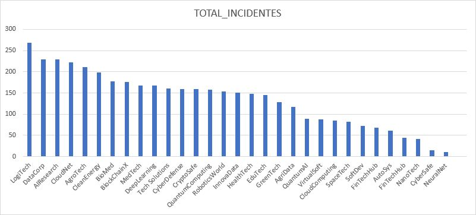
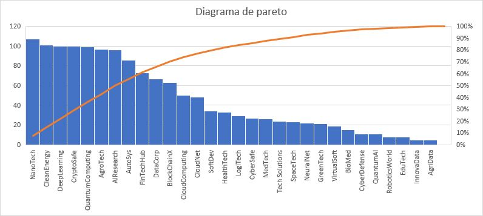
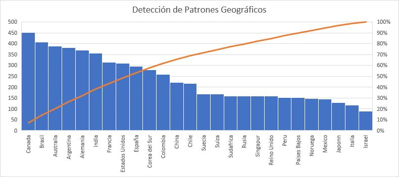
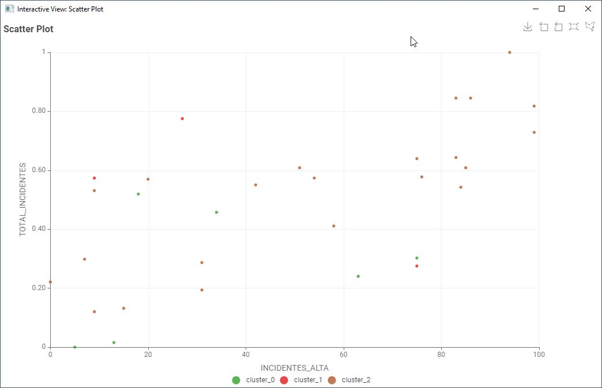

Proceso de aprendizaje y aplicación práctica
En la actualidad, la información y el conocimiento son los recursos más valiosos, superando incluso a materiales tradicionales como el petróleo. La globalización y la tecnología han facilitado el acceso masivo a datos, cambiando la manera en que las personas trabajan, estudian y viven. La innovación y competitividad están directamente relacionadas con el manejo y aplicación efectiva del conocimiento.
Proceso de análisis de datos que combina herramientas y técnicas como analítica empresarial, minería de datos, visualización de datos e infraestructura tecnológica para ofrecer información procesable. Su objetivo principal es mejorar las decisiones empresariales para aumentar ingresos, optimizar eficiencia operativa y obtener ventajas competitivas.
Tecnología de análisis de datos que permite explorar, consultar y analizar grandes volúmenes de datos desde múltiples perspectivas de manera rápida y eficiente. Características principales:
Disciplina que permite encontrar patrones, anomalías y relaciones significativas dentro de grandes conjuntos de datos. Combina tres áreas científicas clave:
Proceso típico incluye: recolección y preparación de datos, selección de atributos relevantes, aplicación de algoritmos, e interpretación y visualización de resultados.
Procedimiento iterativo e interactivo para extraer información útil y comprensible de grandes volúmenes de datos. Etapas:
Técnicas: Árboles de Decisión, Regresión Lineal, Redes Neuronales, K-vecinos más próximos, Naive Bayes, Máquinas de Vectores Soporte (SVM)
Técnicas: Agrupamiento (Clustering) como K-Means
Técnicas: Reglas de Asociación, Análisis de Correlaciones, Programación Lógica Inductiva (ILP)
Técnicas: Algoritmos Genéticos, Inducción de Reglas
ETL (Extracción, Transformación y Carga): Proceso fundamental para preparar datos. Ejemplos de herramientas: Informatica PowerCenter, Talend, Microsoft SSIS, Pentaho Data Integration.
MOLAP (Multidimensional OLAP): Organiza datos en estructuras multidimensionales (cubos OLAP) para análisis rápido. Ejemplo: Microsoft Analysis Services.
Data Warehouse: Repositorio centralizado de datos históricos integrados para análisis. Ejemplos: Snowflake, Amazon Redshift, Google BigQuery.
DataMarts: Subconjuntos de un Data Warehouse orientados a áreas específicas. Ejemplo: departamental (ventas, finanzas).
Subconjunto de datos preparado y optimizado para el proceso de minería de datos. Características:
Ejemplo creado en el curso: Vista para analizar incidentes y logs por empresa y servidor, que permite identificar patrones como frecuencia de incidentes, tiempo promedio de resolución, cantidad de logs y su severidad.
En el curso se trabajó con KNIME, una plataforma open source para análisis de datos que permite:
Otras herramientas populares en el mercado: RapidMiner, Weka, Python (scikit-learn), R, SAS Enterprise Miner.
En el curso se aplicó específicamente:
K-Means Clustering: Método de agrupamiento que divide un conjunto de datos en k grupos donde los puntos en el mismo cluster son más similares entre sí que con puntos en otros clusters. Es un algoritmo de aprendizaje no supervisado.
Se utilizó para agrupar servidores basándose en cantidad y tipo de incidentes (bajos, medios y altos), permitiendo identificar patrones de comportamiento.
Se diseñó un almacén de datos enfocado en la gestión y análisis de incidentes en bases de datos empresariales, con las siguientes entidades:
KNIME: Para el procesamiento y análisis de datos:
K-Means Clustering:
Resultados permitieron agrupar servidores según patrones de incidentes para priorizar recursos y gestión proactiva.
Consulta SQL que integra datos para análisis:
SELECT
e.nombre_empresa,
e.pais,
s.nombre_servidor,
s.estado as estado_servidor,
COUNT(i.id) as total_incidentes,
AVG(i.tiempo_resolucion) as tiempo_promedio_resolucion,
SUM(CASE WHEN i.severidad = 'bajo' THEN 1 ELSE 0 END) as incidentes_bajos,
SUM(CASE WHEN i.severidad = 'medio' THEN 1 ELSE 0 END) as incidentes_medios,
SUM(CASE WHEN i.severidad = 'alto' THEN 1 ELSE 0 END) as incidentes_altos,
COUNT(l.id) as total_logs,
SUM(CASE WHEN l.nivel_severidad = 'critico' THEN 1 ELSE 0 END) as logs_criticos
FROM empresas e
JOIN servidores s ON e.id = s.id_empresa
LEFT JOIN incidentes i ON s.id = i.id_servidor
LEFT JOIN logs_sistema l ON s.id = l.id_servidor
GROUP BY e.nombre_empresa, e.pais, s.nombre_servidor, s.estado
ORDER BY total_incidentes DESC;
El análisis permitió generar insights valiosos para la toma de decisiones:
Identificación de servidores con mayor cantidad de incidentes críticos para priorizar mantenimiento.
Análisis del tiempo promedio de resolución por departamento/empresa para identificar áreas de mejora.
Análisis de incidentes por ubicación para fortalecer infraestructura en áreas problemáticas.
Agrupamiento de servidores según patrones de incidentes para gestión proactiva.
El curso permitió comprender el ciclo completo de la minería de datos, desde la teoría fundamental hasta la aplicación práctica:
Este conocimiento es aplicable no solo en contextos empresariales, sino también en áreas como investigación científica, salud pública, y gestión gubernamental, demostrando el valor transversal de la minería de datos en la sociedad actual.